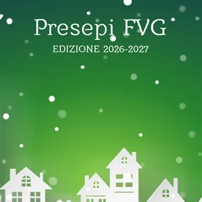

da sab 5 dic a mer 6 gen
Giro Presepi 2026/2027: 11^ mostra presepi artigianali
Anche quest'anno la Pro Loco Pordenone organizza la tradizionale mostra di presepi artigianali visitabili presso la Biblioteca Civica e nelle vetrine della sede Pro Loco. Un tour tra le bellezze architettoniche della città alla scoperta della creatività e fantasia di tanti…
 Indicazioni
Indicazioni
- Costi e prenotazioni
- Costo non indicato · Prenotazione non indicata
- Programma
- Programma da verificare. Apri la fonte ufficiale per orari e possibili aggiornamenti.
- In caso di maltempo
- Nessuna indicazione specifica pubblicata.
- Note
- Acquisito automaticamente dalla fonte.
L’EVENTO
Descrizione completa
Anche quest'anno la Pro Loco Pordenone organizza la tradizionale mostra di presepi artigianali visitabili presso la Biblioteca Civica e nelle vetrine della sede Pro Loco. Un tour tra le bellezze architettoniche della città alla scoperta della creatività e fantasia di tanti presepisti appassionati.
Vi è possibilità di parcheggio per persone con disabilità nelle vicinanze dell’iniziativa
L’iniziativa è facilmente accessibile a carrozzine per bambini e persone con disabilità
Vi è possibilità di accesso per persone con ridotte capacità motorie.
Rassegna presso Biblioteca Civica
Dal 6 dicembre 2026 al 6 gennaio 2027
DICEMBRE:
Domenica 6, martedì 8, sabato 12, domenica 13, sabato 19, domenica 20, sabato 26, domenica 27: ore 10.00 - 12.00 e 15.00 - 18.00
Mercoledì 9, mercoledì 16, giovedì 24, mercoledì 30: ore 10.00 - 12.00
Venerdì 11, venerdì 18: ore 15.00 - 18.00 GENNAIO:
Venerdì 1: ore 15.00 - 18.00
Sabato 2, domenica 3, mercoledì 6: ore 10.00 - 12.00 e 15.00 - 18.00
Rassegna nelle vetrine della sede Pro Loco Pordenone APS
Dal 7 dicembre 2025 al 6 gennaio 2026
sempre visitabile
Inaugurazione Sabato 5 dicembre 2026 ore 18.00
Informazioni:
Tel: 377 9499890
E-mail: prolocopordenoneaps@prolocopordenone.it
IL PROGRAMMA
Programma e orari
Appuntamenti raccolti dalle fonti elencate. Dove manca un orario, non è ancora disponibile in questa scheda.
Programma pubblicato
- Dal 2026-12-05 al 2027-01-06
INFORMAZIONI UTILI
Prima di partire
- Controllare la fonte prima di partire.
ORGANIZZAZIONE